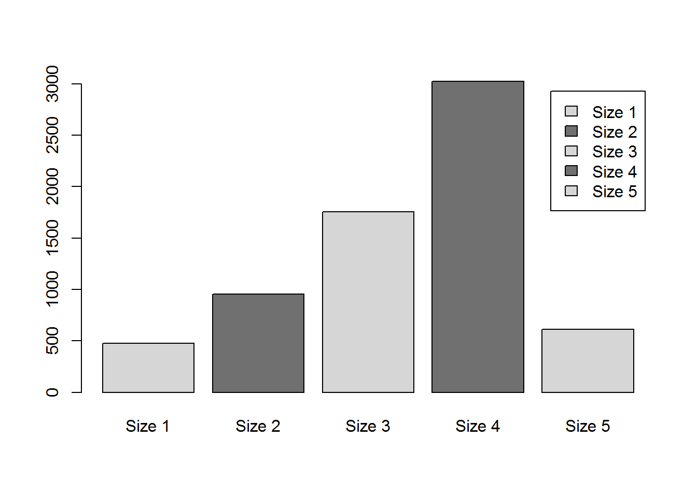
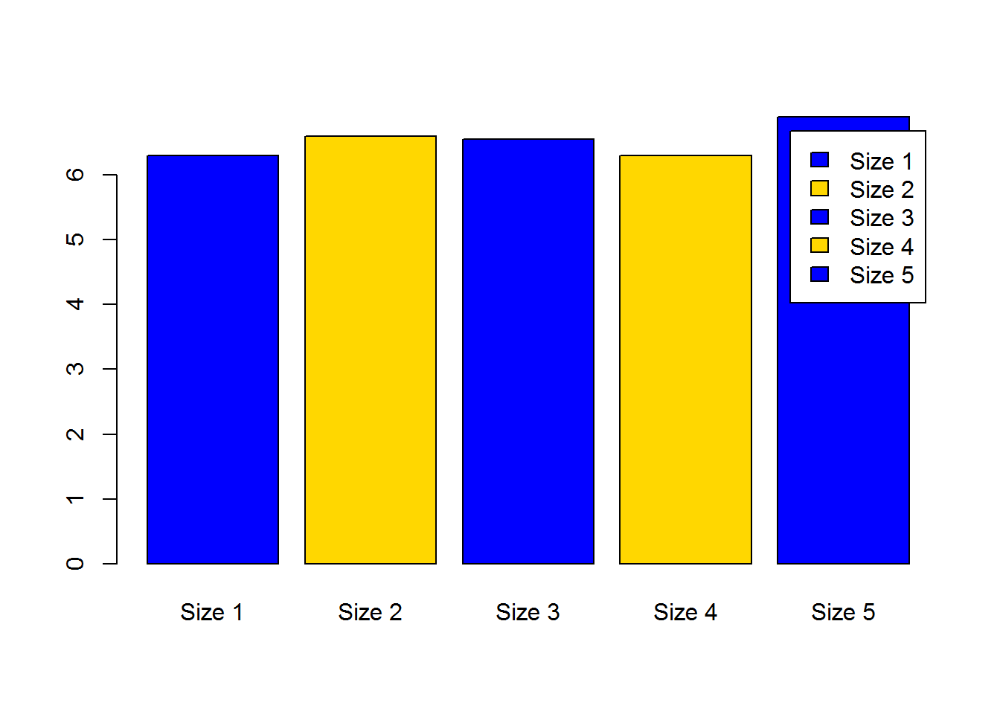
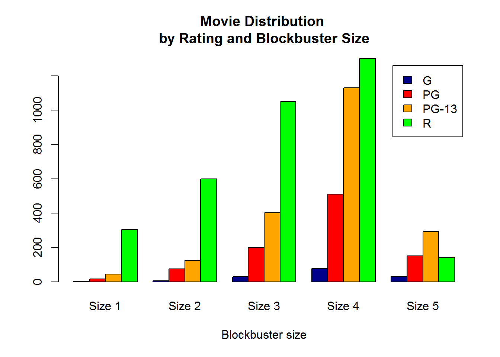
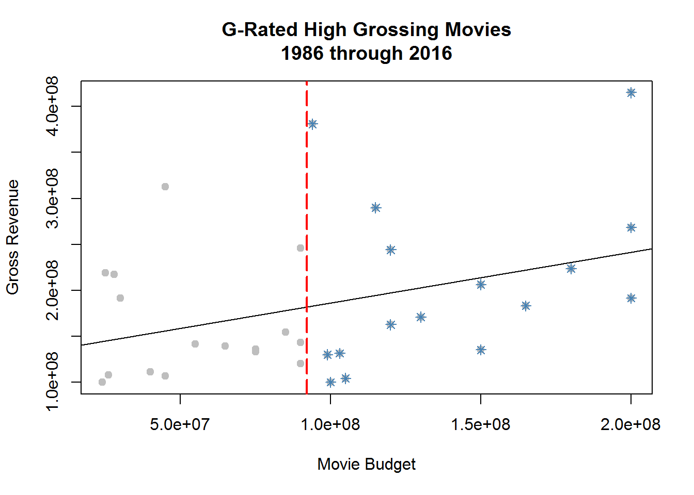
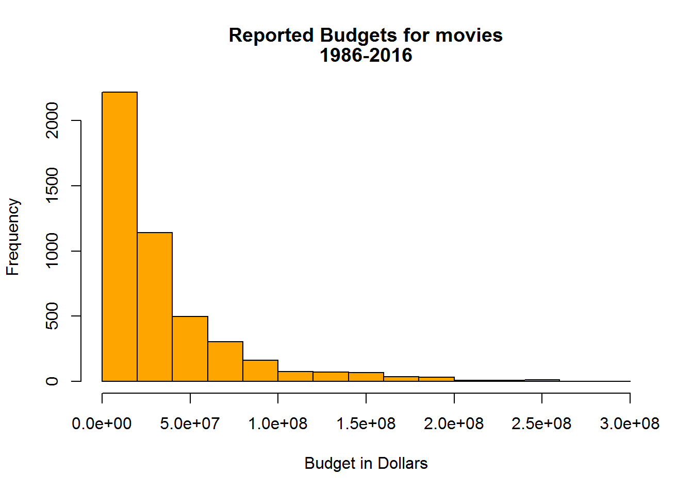
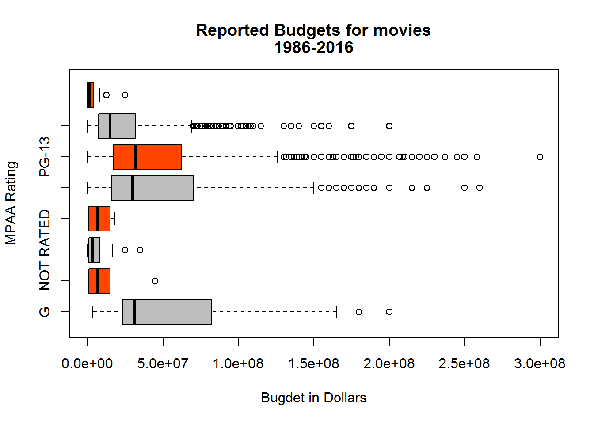
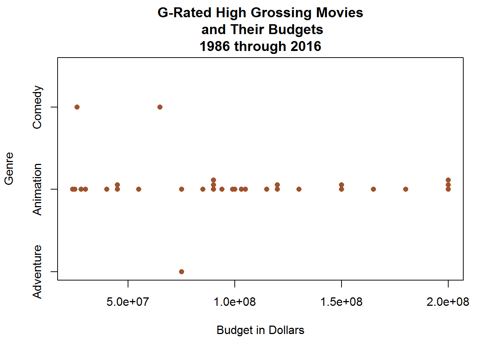
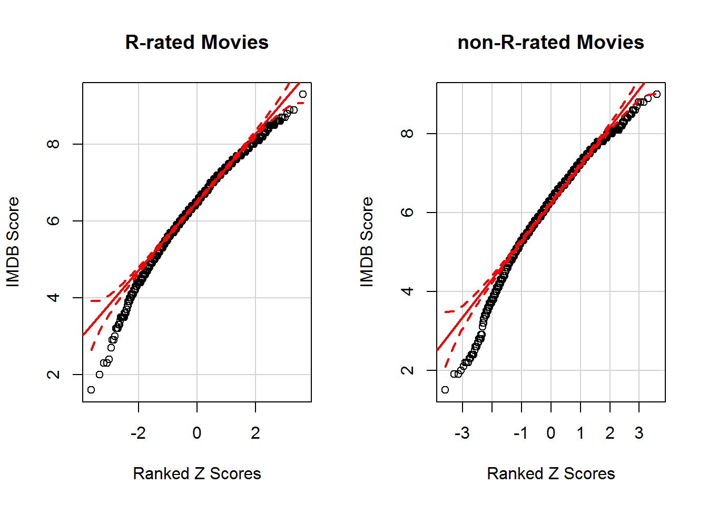
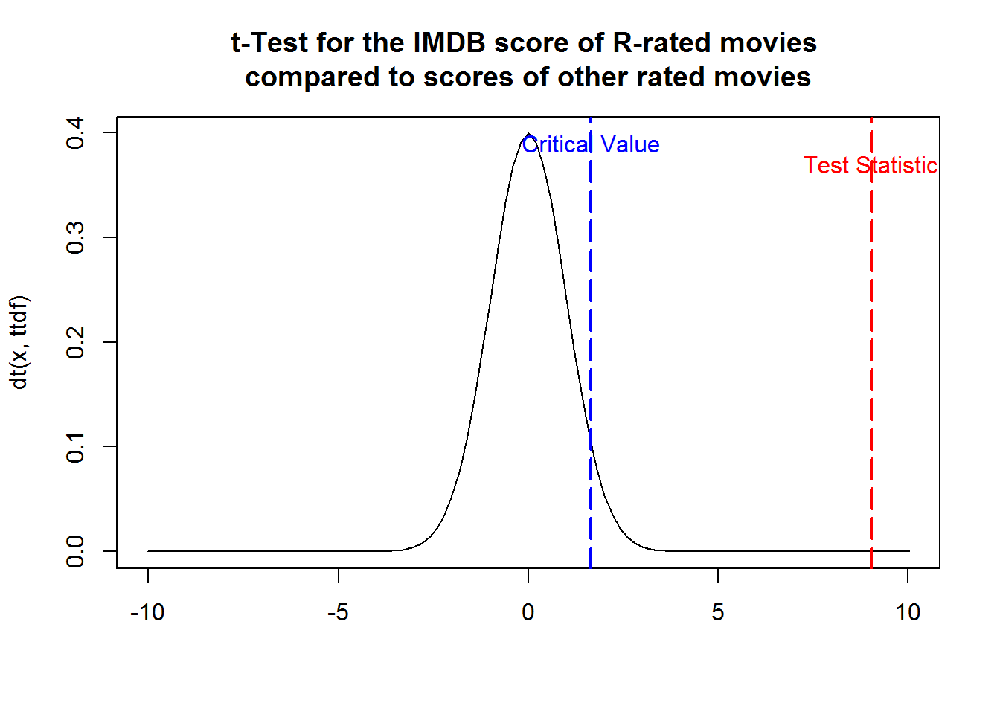

Read and write a csv dataset after setting a working directory
Movies31<-read.csv("./Data/movies31.csv", header=TRUE, stringsAsFactors = FALSE)
CPI <- read.csv("./Data/CPI1914to2017.csv", header=TRUE, stringsAsFactors = FALSE)
#write.csv(Movies31, file = "./Data/MoviesOut.csv")# slim down to 4 ratings
mr4<-subset(Movies31, rating %in% c("G","PG","PG-13","R"), )
# movies G-rated and > $100 Mil
GoodFamily <- subset(Movies31, rating == "G" & gross >= 100000000)
# Change budget = 0 to budget = NA
Movies.wb <- Movies31
MB <- Movies.wb$budget
MB[MB == 0] <- NA
Movies.wb$budget <- MB
# Filter out budget = NA
Movies.wb <- subset(Movies.wb, !is.na(budget))
#re-sort columns
mycolumns<-c(15,9,7,2,5,8,10,3,1,6,4,13,11,12,14)
Movies.Sorted<-Movies31[mycolumns]
#re-sort rows
Movies.Sorted <- Movies.Sorted[order(Movies.Sorted$released),]
# Cut a Quantitative Variable into categories
Movies.Sorted$buster <- cut(Movies.Sorted$gross, breaks = c(0,100000,1000000,10000000,100000000,1000000000),
labels = c("Size 1","Size 2","Size 3","Size 4","Size 5"))
airquality$Season<-mapvalues(airquality$Month,5:9,c("Spr",rep("Sum",3),"Fall"))datatable(GoodFamily, extensions = "Responsive",options=list(lengthMenu = c(3,10,30)))pander::pander(favstats(budget~country, data = GoodFamily))| country | min | Q1 | median | Q3 | max | mean |
|---|---|---|---|---|---|---|
| UK | 4.5e+07 | 4.5e+07 | 4.5e+07 | 4.5e+07 | 4.5e+07 | 4.5e+07 |
| USA | 2.4e+07 | 6e+07 | 9.4e+07 | 1.25e+08 | 2e+08 | 99161290 |
| sd | n | missing |
|---|---|---|
| NA | 1 | 0 |
| 53606652 | 31 | 0 |
GbyC<-favstats(budget~country, data = GoodFamily)
knitr::kable(GbyC)| country | min | Q1 | median | Q3 | max | mean | sd | n | missing |
|---|---|---|---|---|---|---|---|---|---|
| UK | 4.5e+07 | 4.5e+07 | 4.5e+07 | 4.50e+07 | 4.5e+07 | 45000000 | NA | 1 | 0 |
| USA | 2.4e+07 | 6.0e+07 | 9.4e+07 | 1.25e+08 | 2.0e+08 | 99161290 | 53606652 | 31 | 0 |
pander::pander(sum(budget~country, data = GoodFamily))| UK | USA |
|---|---|
| 4.5e+07 | 3.074e+09 |
Movies31$year <- as.factor(Movies31$year)
Movies31$year <- as.integer(as.character(Movies31$year))
Movies.Sorted[5:6] <- lapply(Movies.Sorted[5:6], function(x) as.factor(x))movies2017<-merge(Movies.wb,CPI, by.x = "year", by.y = "Year", all.x = TRUE)
movies2017$Newbudget<-movies2017$budget*movies2017$Factorcbust<-table(Movies.Sorted$buster)
barplot( cbust, col=c("gray84","gray44") ,beside=TRUE , legend.text=TRUE )
mscore<-median(score~buster, data = Movies.Sorted)
barplot(mscore, col=c("blue","gold") ,beside=TRUE , legend.text=TRUE )
Movies.Sorted$rating <- as.character(Movies.Sorted$rating)
mrs4<-subset(Movies.Sorted, rating %in% c("G","PG","PG-13","R"), )
counts <- table(mrs4$rating, mrs4$buster)
barplot(counts, main="Movie Distribution \nby Rating and Blockbuster Size", xlab = "Blockbuster size", col = c("darkblue","red","orange","green"), legend = rownames(counts), beside=TRUE)
Smovie<-subset(mr4, genre %in% c("Comedy","Action","Drama"))
pander(table(Smovie$genre,Smovie$rating))| G | PG | PG-13 | R | |
|---|---|---|---|---|
| Action | 1 | 112 | 517 | 679 |
| Comedy | 18 | 350 | 706 | 923 |
| Drama | 10 | 116 | 410 | 763 |
GoodFamily$budget <- as.integer(GoodFamily$budget)
plot(gross~budget, data = GoodFamily, xlab="Movie Budget", ylab="Gross Revenue", col="gray", pch=19,
main="G-Rated High Grossing Movies\n1986 through 2016")
abline(lm(gross~budget, data = GoodFamily))
BestGF<-subset(GoodFamily, budget>=median(GoodFamily$budget))
points(gross~budget, data = BestGF, col="steelblue", pch=8)
abline(v=median(GoodFamily$budget), lty=5, col="red", lwd=2)
hist(Movies.wb$budget, xlab="Budget in Dollars", col="orange", main="")
title("Reported Budgets for movies", line=2)
title("1986-2016", line=1)
boxplot(budget~rating, data=Movies.wb, ylab="MPAA Rating", xlab="Bugdet in Dollars",
col=c("gray","orangered"), main="",
horizontal=TRUE)
title("Reported Budgets for movies", line=2)
title("1986-2016", line=1)
stripchart(budget~genre, data=GoodFamily, method="stack" ,ylab="Genre", xlab="Budget in Dollars",
main="G-Rated High Grossing Movies\n and Their Budgets\n1986 through 2016", col="sienna", pch=16) 
Do R-Rated movies have a significantly greater mean IMDB score than other ratings (G, PG, or PG-13)?
\[ { H }_{ 0 }:{ \mu }_{ R:Score }={ \mu }_{ other:Score }\\ { H }_{ a }:{ \mu }_{ R:Score }>{ \mu }_{ other:Score} \]
mrs4$R<-mrs4$rating
RTF <- mrs4$R
RTF[RTF != "R"] <- FALSE
RTF[RTF == "R"] <- TRUE
mrs4$R <- RTFpander::pander(favstats(score~R, data = mrs4))| R | min | Q1 | median | Q3 | max | mean | sd | n | missing |
|---|---|---|---|---|---|---|---|---|---|
| FALSE | 1.5 | 5.6 | 6.3 | 6.9 | 9 | 6.229 | 1.05 | 3093 | 0 |
| TRUE | 1.6 | 5.9 | 6.5 | 7.1 | 9.3 | 6.453 | 0.9418 | 3392 | 0 |
R<-subset(mrs4, R %in% TRUE)
notR<-subset(mrs4, R %in% FALSE)
par(mfrow=c(1,2))
qqPlot(R$score, xlab = "Ranked Z Scores", ylab = "IMDB Score", main = "R-rated Movies")
qqPlot(notR$score, xlab = "Ranked Z Scores", ylab = "IMDB Score", main = "non-R-rated Movies")
ttp<-t.test(R$score,notR$score, mu = 0, alternative = "greater", conf.level = 0.95)$p.value
tts<-t.test(R$score,notR$score, mu = 0, alternative = "greater", conf.level = 0.95)$statistic
ttdf<-t.test(R$score,notR$score, mu = 0, alternative = "greater", conf.level = 0.95)$parameter
U<-abs(tts)+1
L<-U*(-1)
tcv<-qt(.95, ttdf)
# Create data for the area to shade
TX<-seq(tts,U,.01)
cord.x <- c(tts,TX,U)
cord.y <- c(0,dt(TX,ttdf),0)
# Make a curve
curve(dt(x,ttdf), xlim=c(L,U), main="t-Test for the IMDB score of R-rated movies \ncompared to scores of other rated movies", xlab = "")
# Add the shaded area.
polygon(cord.x,cord.y,col='skyblue')
abline(v=tts, lty=5, col="red", lwd=2)
abline(v=tcv, lty=5, col="blue", lwd=2)
text(tcv,.39,"Critical Value", col="blue")
text(tts,.37,"Test Statistic", col="red")
pander(t.test(R$score,notR$score, mu = 0, alternative = "greater", conf.level = 0.95))| Test statistic | df | P value | Alternative hypothesis | mean of x |
|---|---|---|---|---|
| 9.031 | 6233 | 1.112e-19 * * * | greater | 6.453 |
| mean of y |
|---|
| 6.229 |
Therefore, there is sufficient evidence to conclude that R-rated movies have a higher average IMDB score than other movies.
favstats(score~year, data = mrs4)## year min Q1 median Q3 max mean sd n missing
## 1 1986 2.9 5.500 5.90 6.900 8.4 6.073206 1.0267807 209 0
## 2 1987 2.2 5.400 6.20 6.900 8.3 6.109859 1.1310149 213 0
## 3 1988 3.4 5.700 6.10 6.900 8.5 6.205556 0.9439978 216 0
## 4 1989 2.8 5.500 6.20 6.800 8.3 6.116744 0.9783156 215 0
## 5 1990 1.6 5.600 6.20 7.000 8.7 6.208920 1.0434274 213 0
## 6 1991 2.8 5.700 6.40 7.000 8.6 6.318779 0.9434603 213 0
## 7 1992 3.5 5.700 6.40 7.000 8.3 6.335644 0.8741830 202 0
## 8 1993 3.5 5.650 6.40 7.050 8.9 6.305314 1.0470582 207 0
## 9 1994 2.4 5.500 6.30 7.100 9.3 6.235377 1.1211552 212 0
## 10 1995 3.9 5.800 6.40 6.900 8.6 6.336842 0.9368172 209 0
## 11 1996 2.4 5.600 6.25 6.900 8.2 6.176168 1.0215712 214 0
## 12 1997 2.7 5.600 6.40 7.000 8.6 6.260766 1.0995591 209 0
## 13 1998 2.3 5.800 6.40 7.050 8.6 6.343478 1.0685911 207 0
## 14 1999 2.5 5.800 6.50 7.100 8.8 6.373934 1.0851522 211 0
## 15 2000 2.4 5.700 6.40 7.000 8.5 6.289447 1.0297294 199 0
## 16 2001 2.2 5.900 6.50 7.100 8.8 6.433178 0.9868013 214 0
## 17 2002 3.0 5.600 6.50 7.100 8.7 6.355556 1.0575385 216 0
## 18 2003 2.0 5.600 6.40 7.100 8.9 6.342927 1.1106486 205 0
## 19 2004 2.0 5.900 6.60 7.300 8.3 6.466829 1.0636011 205 0
## 20 2005 2.2 5.800 6.50 7.100 8.3 6.358962 1.0644024 212 0
## 21 2006 2.7 5.800 6.60 7.125 8.5 6.466827 0.9798479 208 0
## 22 2007 2.3 5.900 6.60 7.200 8.5 6.470698 1.0242513 215 0
## 23 2008 1.9 5.900 6.50 7.000 9.0 6.338863 1.0581235 211 0
## 24 2009 2.6 5.800 6.50 7.100 8.4 6.415238 0.9541931 210 0
## 25 2010 3.5 5.900 6.40 7.100 8.8 6.431034 0.9071620 203 0
## 26 2011 3.4 5.900 6.50 7.100 8.6 6.444335 0.8692804 203 0
## 27 2012 3.8 5.800 6.50 7.100 8.4 6.430918 0.8807051 207 0
## 28 2013 3.5 6.100 6.50 7.100 8.2 6.556039 0.7985726 207 0
## 29 2014 1.5 6.075 6.50 7.200 8.6 6.547642 0.9214886 212 0
## 30 2015 4.1 6.000 6.50 7.100 8.2 6.467327 0.8508245 202 0
## 31 2016 3.9 6.000 6.50 7.200 8.5 6.542233 0.8404487 206 0wilcox.test(score~rating, data = mrs4, subset = rating %in% c("R","G"))##
## Wilcoxon rank sum test with continuity correction
##
## data: score by rating
## W = 250730, p-value = 0.907
## alternative hypothesis: true location shift is not equal to 0t.test(score~rating, data = subset(mrs4, rating %in% c("R","G")))##
## Welch Two Sample t-test
##
## data: score by rating
## t = -0.1694, df = 156.07, p-value = 0.8657
## alternative hypothesis: true difference in means is not equal to 0
## 95 percent confidence interval:
## -0.1914028 0.1611664
## sample estimates:
## mean in group G mean in group R
## 6.438095 6.453213